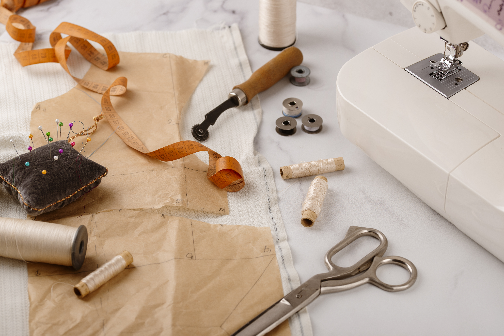

Maishiy texnika ta'miri
Maishiy texnika ta'mirlovchilari kir yuvish mashinalari, muzlatgichlar, mikrodalga pechlar kabi qurilmalarni tiklaydi, bu esa uydagi qulaylikni ta'minlaydi.
Ariza qoldirish.jpg)
Zamonaviy dunyoda qiziqarli va talabgir kasblarni kashf eting.
Ariza qoldiringElektriklar elektr tizimlarini o'rnatish, xizmat ko'rsatish va ta'mirlash bilan shug'ullanadi. Bu ko'plab tarmoqlarda eng talabgir kasblardan biridir.
Ariza qoldirishKompyuter tarmoqlari operatorlari internet ulanishlari va serverlarning uzluksiz ishlashini ta'minlaydi. Ular jihozlarni sozlashadi va ma'lumotlar xavfsizligini nazorat qilishadi.
Ariza qoldirishAvtomexanik avtomobillarni diagnostika qiladi va ta'mirlaydi. U dvigatellar va boshqa muhim tizimlar haqida hamma narsani biladi.
Ariza qoldirishTikuvchilar individual buyurtmalar asosida kiyimlar yaratadilar, matolar va shakllar bilan ishlaydilar, g'oyalarni hayotga tadbiq etadilar. Bu ijodkorlar uchun kasbdir.
Ariza qoldirish
Maishiy texnika ta'mirlovchilari kir yuvish mashinalari, muzlatgichlar, mikrodalga pechlar kabi qurilmalarni tiklaydi, bu esa uydagi qulaylikni ta'minlaydi.
Ariza qoldirish
Dizaynerlar vizual konseptlar, logotiplar va interfeyslar yaratadilar. Ular san'at va biznesning kesishgan joyida ishlaydilar, g'oyalarni jozibali va funksional loyihalarga aylantiradilar.
Ariza qoldirish